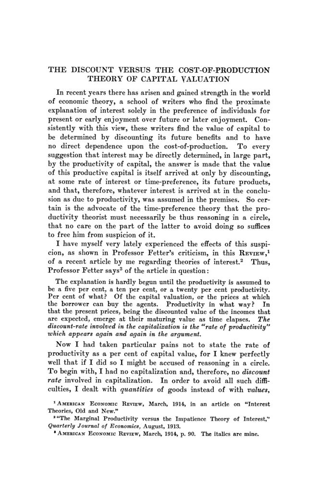

Brown, 1914: o custo de produção ainda explica o valor do capital?
Leitura: 8 min
Acusado por Fetter de raciocinar em círculo, Brown leva o debate à ilha de Crusoé: com 1.000 frutas ou 10 árvores pelo mesmo trabalho, o custo de produção limita o preço do capital.


No número de março de 1914, Frank A. Fetter acusou Harry Gunnison Brown, de Yale, de supor no início do raciocínio a taxa de juros que pretendia explicar. A produtividade de 5%, 10% ou 20% de que Brown falava, perguntava Fetter, era porcentagem de quê? Do valor do capital, respondia, e esse valor já é um desconto de rendimentos futuros. Três meses depois, Brown responde nas mesmas páginas.
O alvo, explica, é uma escola que vinha ganhando força: a dos autores que veem na preferência pelo presente a explicação imediata e única dos juros e para quem o valor do capital resulta apenas do desconto de seus benefícios futuros, sem dependência direta do custo de produção. Para esses autores, qualquer teoria da produtividade cai necessariamente num círculo.
Brown raciocinou em círculo?
Brown diz que tomou cuidado justamente para evitar a acusação. No artigo criticado, de 1913, não exprimiu a produtividade como porcentagem do valor do capital. Comparou quantidades físicas: o mesmo esforço daria 100 unidades de um bem neste ano pela produção direta e 110 no ano seguinte por um método mais indireto. Perguntou, então, a que taxa os bens presentes se trocariam pelos futuros. Não havia capitalização no ponto de partida, e portanto nenhuma taxa de desconto embutida.
Brown conta que já acreditara na teoria psicológica pura e que, por isso, conhecia bem a objeção. A seu ver, a convicção de Fetter de que é impossível ligar juros a produtividade sem círculo o levou a supor o erro, em vez de demonstrá-lo.
A segunda objeção de Fetter era que Brown e Seager só olhavam para o empresário que toma emprestado, um intermediário, e esqueciam o consumidor final. Brown responde que mencionou o empresário em um ou dois parágrafos, por cautela, mas que escreveu quase sempre como se cada pessoa trabalhasse por conta própria, emprestasse e tomasse emprestado diretamente e fosse ao mesmo tempo produtora e consumidora final. Se a teoria vale, vale para o problema fundamental, e não só para os juros do intermediário.
O que acontece na ilha de Crusoé?
Para mostrar o argumento sem intermediários, Brown vai à ilha de Robinson Crusoé depois da chegada dos espanhóis. A terra não melhorada não tem valor, porque sobra. Numa ilha vizinha, alcançável a pé fora da maré alta, há frutas e mudas de uma árvore que dá fruto uma vez, um ano depois de plantada, e morre. Cada árvore rende, em média, 110 frutas.
Crusoé descobre que dez viagens lhe permitem trazer 1.000 frutas ou, com o mesmo trabalho, trazer e plantar 10 mudas, que darão 1.100 frutas no ano seguinte. A espera de um ano rende 10% a mais. As mudas precisam nascer na ilha vizinha, de modo que o plantio se repete todo ano.
Entra um espanhol que trabalha além de suas necessidades para acumular capital e quer comprar as 10 árvores que Crusoé acabou de plantar. Quanto pagará, em frutas? Se sua preferência no tempo é de 5%, não pagará mais de 1.048, valor presente das 1.100 frutas futuras. Mas também não pagará mais de 1.000, porque com o trabalho necessário para juntar 1.000 frutas poderia buscar e plantar ele mesmo 10 árvores. Sua recusa, diz Brown, não vem da preferência no tempo, e sim da escolha do caminho mais barato para obter os mesmos bens futuros.
Brown resume: o valor das árvores não pode passar da quantidade de outros bens que “requer o mesmo trabalho para obter diretamente”. (“requires the same labor to get directly”)
O comprador, insiste Brown, não escolhe entre duas opções, frutas agora ou frutas depois, como supõe a teoria do desconto. Escolhe entre ao menos três: frutas deste ano, frutas do ano que vem das árvores compradas e frutas do ano que vem de árvores obtidas com o próprio trabalho. A terceira opção influi diretamente no preço do capital, sem passar pela preferência no tempo.
E do lado de quem vende?
Crusoé, agora, não acumula mais capital: quer frutas presentes. Uma vez plantadas as árvores, a preferência no tempo pode decidir sozinha o preço mínimo: com 15%, ele não as venderia por menos de 956 frutas e preferiria esperar as 1.100. Mas, antes de plantar, ele compara: pode usar o trabalho para buscar frutas diretamente. Ano após ano, não produzirá árvores para vender por menos de 1.000 frutas, e essa possibilidade mantém as árvores escassas o bastante para valerem esse preço.
O mesmo vale para o salário e para o empréstimo. Crusoé não trabalhará para o espanhol plantando árvores por menos frutas do que obteria buscando-as. Como tomador produtivo, não pagará mais de 1.100 frutas no ano que vem por 1.000 agora; mas, por mais baixa que seja sua preferência no tempo, aceitará qualquer juro abaixo de 10%, porque o empréstimo o deixa igual no presente e melhor no futuro. Sua comparação é entre dois futuros, e não entre o presente e o futuro.
Brown não nega as influências indiretas. O ganho do método indireto afeta a preferência no tempo, ao mudar a dotação relativa de bens presentes e futuros, e a preferência no tempo afeta até onde se leva a produção indireta. No equilíbrio, a taxa de juros de mercado coincide com a taxa de preferência e com a de produtividade. O que ele recusa é a tese de que a preferência seja a única causa imediata e de que todas as outras ajam por meio dela.
Onde a teoria do desconto basta?
A distinção entre terra e capital, que Fetter atacara, é para Brown uma distinção entre bens reproduzíveis e não reproduzíveis. Quadros de velhos mestres e terrenos comerciais em Nova York estão na mesma categoria. Ele não nega que exista terra “feita” nem que o trabalho acrescente valor à terra; afirma que, na medida em que as características de um bem não podem ser reproduzidas, seu valor não tem o teto do custo de produção.
Numa ilha superpovoada, sem possibilidade prática de acrescentar terra, o valor da terra só poderia ser obtido pelo desconto de seus rendimentos futuros. Para esse tipo de bem, admite Brown, a teoria de Fetter pode servir. Para o capital reproduzível, como casas, fábricas e árvores, o custo de produção é um dos determinantes do valor.
O fecho é uma defesa da tradição. Os economistas antigos achavam óbvio que o valor do capital dependia em boa parte do custo de produção e não previram que alguém tentaria reduzir todos os custos a valores descontados. Brown reconhece que teóricos da produtividade foram descuidados ao tomar como custo algo que já envolvia desconto, mas afirma que isso não é necessário. Quanto ao rótulo de eclético, aceita-o: não vê vantagem em explicar por uma causa o que tem duas.
Na minha leitura
Na minha leitura, a força do artigo está em trocar uma discussão sobre ordem das causas por uma pergunta sobre alternativas. Ao mostrar que o comprador de capital pode também produzi-lo, Brown introduz um custo de oportunidade medido em bens, e não em valores descontados, e com isso escapa da acusação de círculo. O exemplo das árvores é simples, mas contém a ideia de arbitragem entre comprar e produzir que sustenta a teoria do investimento.
O limite do argumento é o que Brown mesmo admite: ele vale para bens reproduzíveis com retornos constantes, em que o mesmo trabalho sempre dá 10 árvores. Onde a oferta é fixa, como na terra superpovoada, volta-se ao desconto puro. O desacordo com Fetter, portanto, é menos sobre a aritmética do que sobre qual caso deve servir de modelo geral.
Glossário
- Preferência no tempo
- valor maior atribuído aos bens presentes em relação aos futuros; Fisher a chamou de impatience.
- Teoria do desconto
- tese de que o valor do capital é apenas o valor presente de seus rendimentos futuros.
- Custo de produção
- no sentido de Brown, os bens que o mesmo trabalho produziria diretamente.
- Produção indireta
- método que usa tempo e bens intermediários para obter mais produto no futuro.
- Petição de princípio
- raciocínio que supõe na premissa o que pretende provar.
- Bem reproduzível
- bem que pode ser produzido de novo, como casas, fábricas e árvores.
- Eclético
- que admite mais de uma causa para o mesmo fenômeno.
Fontes
- The Discount Versus the Cost-of-Production Theory of Capital Valuation — Harry Gunnison Brown (Yale University) (pp. 340–349). JSTOR · Internet Archive (PDF)
- Edição completa, com os demais artigos: Nº 130 do Arquivo.
Documento em domínio público (EUA, publicado antes de 1931), via JSTOR Early Journal Content e Internet Archive. Resumo e comentário do autor deste site, sem afiliação com a American Economic Association. Encontrou um erro? Escreva: a correção é publicada no próprio texto, com data.
← Munro, 1914: a Alemanha contra a Standard Oil ↑ Nº 130 · Junho de 1914: uma greve geral e o monopólio alemão do petróleo